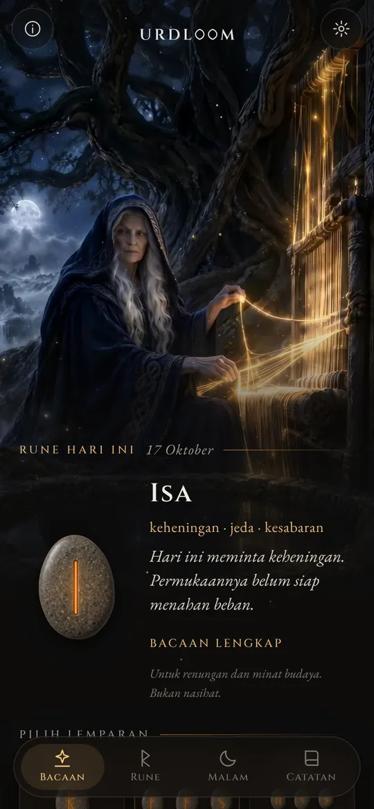
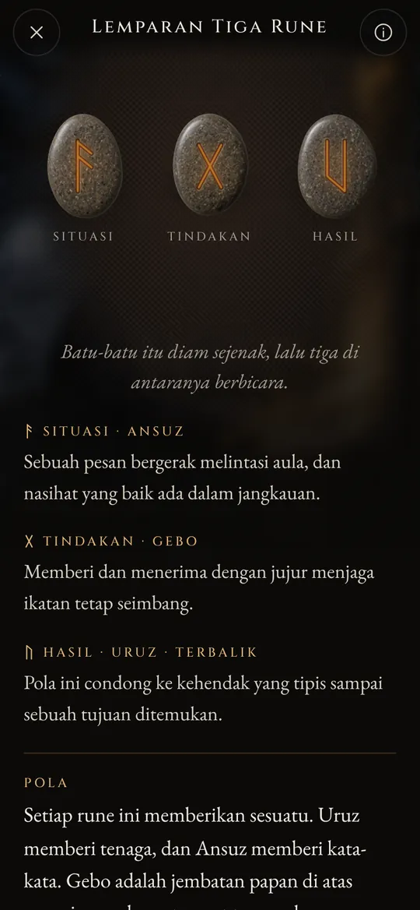
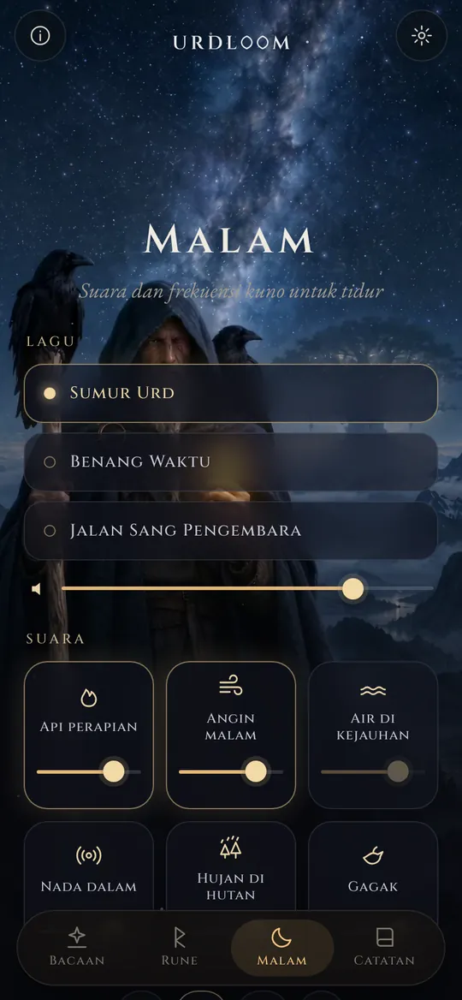
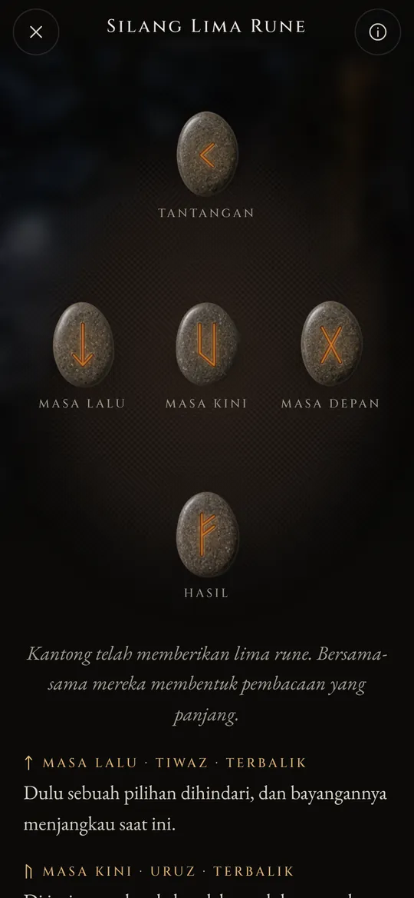

Bacaan rune dari sumur takdir.
Lempar Elder Futhark, baca apa yang jatuh dengan suara puisi-puisi lama, dan biarkan suara malam membawamu ke dalam tidur.
Tiga perempuan duduk di tepi sumur
Dalam puisi-puisi Nordik kuno, tiga Norn duduk di tepi sumur di bawah Yggdrasil, sang pohon dunia. Mereka menyirami akarnya, mengukir tongkat, dan menetapkan hidup setiap orang yang lahir. Yang tertua adalah Urd. Namanya berarti apa yang telah terjadi, dan sumur itu dinamai menurut namanya.
Urdloom mengambil namanya dari Urd, dan dari alat tenun tempat takdir konon ditenun. Aplikasi ini menjaga suasana itu: sekantong batu di tanganmu, selembar kain di lantai, dan bacaan yang ditulis dengan suara saga, bukan suara horoskop.

Dari sana datang para dara, yang banyak tahu, tiga dari danau di bawah pohon.Völuspá, bait 20
Genggam, guncang, lepaskan
Genggam kantongnya dan batu-batu bergemeletuk di tanganmu. Lepaskan, dan batu-batu itu melayang ke atas kain, bergulir, diam, lalu terbalik satu per satu. Bacaan muncul di bawahnya.

Satu Rune
Satu batu untuk hari yang ada di depanmu, atau untuk pertanyaan yang bisa dijawab ya atau tidak. Ketuk, dan batu itu pun terlempar.


Lemparan Tiga Rune
Situasi, tindakan, hasil. Baca dari kiri ke kanan seperti saga pendek, lalu sebagai satu kesatuan: benang penutup menunjukkan bagaimana ketiganya saling berbicara.

Silang Lima Rune
Masa lalu, masa kini, dan masa depan melintang di tengah, tantangan di atas dan hasil di bawah, dengan dirimu di jantungnya.




Setiap bacaan ditulis dengan tangan: dua puluh empat rune, setiap pasangan, dan semua 2.024 kombinasi tiga rune, dalam masing-masing dari dua puluh dua bahasa. Tidak ada yang dihasilkan selagi kamu menunggu.

Dua puluh empat rune
Elder Futhark adalah abjad rune tertua, diukir kira-kira dari abad ke-2 hingga abad ke-8. Dua puluh empat tandanya terbagi menjadi tiga keluarga yang masing-masing berisi delapan, disebut ætt, dan tiap ætt dinamai menurut dewa yang runenya berdiri paling depan. Sentuh sebuah batu untuk membacanya.
Ætt Freyr
Ætt Hagal
Ætt Tyr
Nama-nama rune tetap dalam bentuk lamanya di setiap bahasa. Itulah nama tanda-tanda itu sendiri, yang direkonstruksi para ahli dari puisi rune dan abjad-abjad tertua.
Sejarah singkat rune
Rune pertama-tama adalah huruf. Bangsa-bangsa Jermanik mengukirnya pada kayu, tulang, logam, dan batu selama sekitar seribu lima ratus tahun. Beginilah tanda-tanda itu dan tradisi lama menarik undian sampai kepada kita.

Undian di atas kain putih
Sejarawan Romawi Tacitus menulis bahwa bangsa Jermanik memotong dahan pohon buah menjadi bilah-bilah kecil, menandainya dengan tanda-tanda, lalu menebarkannya di atas kain putih. Seorang pendeta atau kepala rumah tangga mengambil tiga, satu per satu, lalu membacanya. Ia tidak menyebut tanda-tanda itu rune, tetapi gerak itulah yang dijaga Urdloom.
Prasasti pertama
Sebuah sisir tulang yang ditemukan di rawa Vimose di Denmark memuat salah satu prasasti rune tertua yang diketahui, satu kata saja: harja. Mata tombak, bros, dan jimat dari abad-abad yang sama menunjukkan bahwa aksara ini sudah menyebar ke seluruh utara.
Seluruh deret pada satu batu
Pada batu Kylver dari Gotland, seseorang mengukir kedua puluh empat tanda menurut urutannya, futhark lengkap tertua yang kita miliki. Deret ini dinamai menurut enam huruf pertamanya: f, u, th, a, r, k.
Tanduk-tanduk emas
Salah satu dari dua tanduk emas Gallehus di Denmark memuat sebaris sajak beraliterasi: Aku, Hlewagastiz putra Holt, membuat tanduk ini. Inilah salah satu baris puisi paling awal dalam bahasa Jermanik mana pun.
Enam belas tanda untuk Zaman Viking
Di Skandinavia, abjad ini dipangkas menjadi enam belas tanda, yaitu Futhark Muda. Ribuan batu peringatan didirikan dengan hurufnya, di antaranya batu-batu besar di Jelling, Denmark.
Puisi-puisi dituliskan
Para juru tulis Islandia menuliskan puisi-puisi Edda. Dalam Völuspá, para Norn duduk di tepi sumur Urd; dalam Hávamál, Odin tergantung sembilan malam di pohon yang diterpa angin dan memungut rune sambil berseru.
Satu bait untuk setiap rune
Puisi rune dari Norwegia dan Islandia, bersama sebuah puisi Anglo-Saxon yang lebih tua, memberi setiap rune satu bait pendek: ternak memicu perselisihan di antara kerabat, hujan es adalah bulir yang paling dingin, es sangat licin. Sebagian besar yang kita ketahui tentang makna rune berasal dari bait-bait ini.
Membaca kembali
Memakai rune untuk perenungan adalah kebangkitan modern yang dibangun di atas puisi-puisi itu dan citra-citra dalam Edda. Urdloom berdiri dalam tradisi itu secara terbuka: ia tidak mengaku sebagai orakel kuno, hanya ingin membaca tanda-tanda lama dengan cermat.

Suara dan frekuensi kuno untuk tidur
Saat hari usai, sang pengembara keluar di bawah bintang-bintang. Pilih sebuah lagu, tambahkan suara di atasnya, dan atur pengatur waktu. Suara terus mengalun meski layar mati dan memudar dengan sendirinya.
Tiga lagu: Sumur Urd, Benang Waktu, dan Jalan Sang Pengembara, dibangun di atas nyanyian tenggorokan, gendang bingkai, dan tagelharpa yang digesek.
Enam lapisan untuk dipadukan, masing-masing dengan tingkat suaranya sendiri: api perapian, angin malam, air di kejauhan, nada dalam, hujan di hutan, dan gagak.
Setiap suara dibuat khusus untuk Urdloom. Tidak ada yang diputar dari internet.
Hal-hal kecil yang berarti
- Satu rune setiap pagi
- Satu batu menunggu tertelungkup di layar pertama. Jika mau, pesan singkat memberitahumu setiap pagi rune mana yang ditarik untukmu.
- Catatan
- Simpan bacaan yang berbicara kepadamu, bersama pertanyaan yang kamu ajukan.
- Bacaan yang bisa dibagikan
- Kirim bacaan sebagai gambar: batu-batu seperti saat jatuh dan kata-kata di bawahnya.
- Dua puluh dua bahasa
- Masing-masing ditulis dan diperiksa oleh orang yang membacanya, dengan jenis dan ukuran huruf yang bisa kamu ubah.
Yang terjadi di sini, tetap di sini
Urdloom bekerja tanpa internet. Tidak ada akun, tidak perlu mendaftar, dan tidak ada iklan. Aplikasi ini juga tidak memuat analitik atau pelacakan dalam bentuk apa pun. Pertanyaanmu, bacaanmu, dan catatanmu tetap di ponselmu.
PrivasiPertanyaan
Apakah Urdloom meramalkan masa depan?
Tidak. Bacaan ini untuk perenungan dan minat budaya. Ia menunjuk, seperti rune-rune lama, dan maknanya terbentuk dalam hidupmu sendiri. Tidak ada isi aplikasi ini yang merupakan nasihat medis, keuangan, hukum, atau nasihat profesional lainnya.
Mengapa bahasanya terdengar kuno?
Rune berasal dari dunia puisi, saga, dan teka-teki. Kami sengaja menulis bacaan dengan suara itu dan menjaganya sedekat mungkin dengan tradisi rune, dalam setiap bahasa.
Apakah perlu koneksi internet?
Tidak. Semuanya, dari bacaan hingga suara malam, ada di dalam aplikasi.
Bahasa apa saja yang tersedia?
Bahasa Inggris, Turki, Jerman, Prancis, Spanyol, Italia, Portugis, Rusia, Ukraina, Polandia, Belanda, Swedia, Norwegia, Finlandia, Yunani, Arab, Hindi, Indonesia, Jepang, Korea, Tionghoa, dan Albania.
Tulis kepada kami
Pertanyaan, kata yang terasa janggal dalam bahasamu, atau bacaan yang terus teringat: kami membaca setiap pesan.
support@urdloom.app